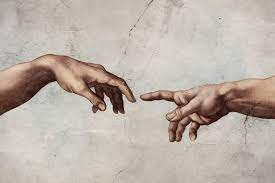

SOMOS EL ARTE Y EL ARTE ES NOSOTROS
 A lo largo de la historia, el ser humano ha tratado de encontrar múltiples formas de expresar sus sentimientos ya sea a través de cosas materiales, verbales o la que nos convoca aquí el día de hoy, el arte. Esta muestra emocional propia del ingenio y la creatividad humana es una de las más amplias y ha llegado a ser plasmada de mil y un formas. Actualmente el arte se divide en siete grupos principales: Arquitectura, escultura, pintura, música, danza, literatura y cine. El arte ha estado presente en la humanidad desde siempre, con ejemplos como las pinturas rupestres, los monumentos y altares de piedra, esculturas e imágenes talladas, etc. Pero a todo esto ¿Qué es el arte? ¿Por qué es arte? ¿Qué es lo bello?.
A lo largo de la historia, el ser humano ha tratado de encontrar múltiples formas de expresar sus sentimientos ya sea a través de cosas materiales, verbales o la que nos convoca aquí el día de hoy, el arte. Esta muestra emocional propia del ingenio y la creatividad humana es una de las más amplias y ha llegado a ser plasmada de mil y un formas. Actualmente el arte se divide en siete grupos principales: Arquitectura, escultura, pintura, música, danza, literatura y cine. El arte ha estado presente en la humanidad desde siempre, con ejemplos como las pinturas rupestres, los monumentos y altares de piedra, esculturas e imágenes talladas, etc. Pero a todo esto ¿Qué es el arte? ¿Por qué es arte? ¿Qué es lo bello?.Para poder responder estos interrogantes es importante recalcar que se debe tener en cuenta la perspectiva y visión del arte de uno de los grandes pensadores de la antigüedad, Aristóteles, y como esta opinión provocó de una forma indirecta que se cambiaran muchos aspectos con respecto a lo que es el arte y como se puede interpretar este mismo. La idea de mimesis o imitación es la concepción de arte para Aristóteles. Se puede describir como una representación artística de la realidad y la naturaleza o también acontecimientos de la historia de la humanidad. Aristóteles utiliza la mimesis y el arte como un método de aprendizaje y ve a estos mismos como un objeto de observación en constante actualización. También ve a los artistas como unos tipos de filósofos, los cuales utilizan para argumentar y expresar su punto de vista sus obras y composiciones que, aunque esta intención no llegue a ser interpretada en su totalidad por el observador, lo importante es que se demuestre esa emoción con algo más que pasión.
Según la RAE (Real Academia Española), el arte es una manifestación de la actividad humana mediante la cual se interpreta lo real o se plasma lo imaginado con recursos plásticos, lingüísticos o sonoros. La definición de la RAE no está tan alejada de la realidad, o lo que Aristóteles y yo consideramos es el arte. La realidad es un tema clave utilizados en las diferentes artes, ya que es fácil de ser interpretado por el espectador dándole una sensación de familiaridad con respecto a lo que fue plasmado.
No solo se plasma la realidad en el arte, uno de los múltiples temas que considero que es uno de los mejores es “Las emociones y sentimientos”. Recordemos que el ser humano es un ser de emociones que da y recibe sentimientos constantemente en su viva diaria. Es muy común que los artistas transmitan estos sentimientos de manera figurativa ya que no podemos ver de forma concreta una emoción. Puede que estos artistas transmitan sus propios sentimientos o también pueden plasmar una emoción de manera general, esto se encuentra muy presente en la música, el dibujo y la pintura.
Esto nos puede llevar a pensar que el arte, es por así decirlo una muestra de algo físico o mental de una persona utilizando recursos materiales para crear una obra que pueda transmitir eso.
En este mundo, todas las cosas presentan características que las hacen únicas e individuales con respecto al resto y uno de estas es la belleza, en el arte es un pilar importantísimo. Ya bien una obra de arte se puede considerar bella teniendo en cuenta la intención que el autor le quiere dar y como esta es recibida por la audiencia. Esto quiere decir que en si la belleza de algo se rige más por la opinión colectiva del espectador que por su real belleza, que en realidad no existe porque lo bello solo aparece hasta que se le considera de esa manera.
Para mí lo bello es lo que se complementa y al unirse con mi ser se siente ese encuentro, no hay cosa mas bella que lo natural dentro de las cosas, cuando uno sabe que eso es perfecto porque si, que al contemplarlo y percibirlo se llega a sentir tranquilidad y fascinación indiscutible. La belleza no solo existe en el arte, podemos considerar a un atardecer de verano en las montañas como algo bello, o todos los buenos momentos que pasamos por seres queridos, también se pueden considerar bellos.
El arte y lo bello es algo muy ambiguo y diverso, todos tenemos puntos de vista diferentes con respecto a lo que podemos llegar a considerar arte o bello.
En conclusión, podemos llegar a decir que el arte tiene su esencia en el ser humano mismo y el cómo este logra interpretar y expresar sus ideas y emociones a través de composiciones ya sean de alta o simple dificultad, pero que aún si puedan llegar a tener algo de belleza expresada por un espectador ajeno que le pueda llegar a encontrar algo de bello, también es necesario que este espectador o que el mismo autor considere a esta obra como algo de arte. Por esta razón nosotros somos el arte y el arte es nosotros. Ya que somos quien considera lo que es arte y lo que no y a su vez somos quienes le damos su belleza e individualidad.